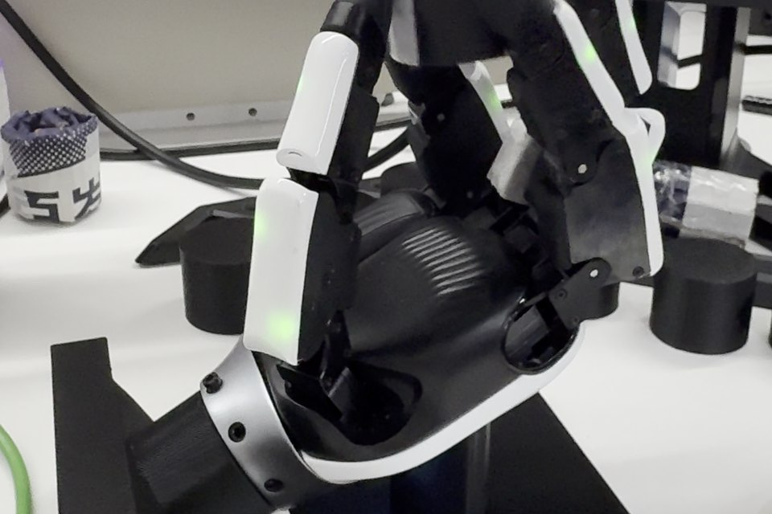
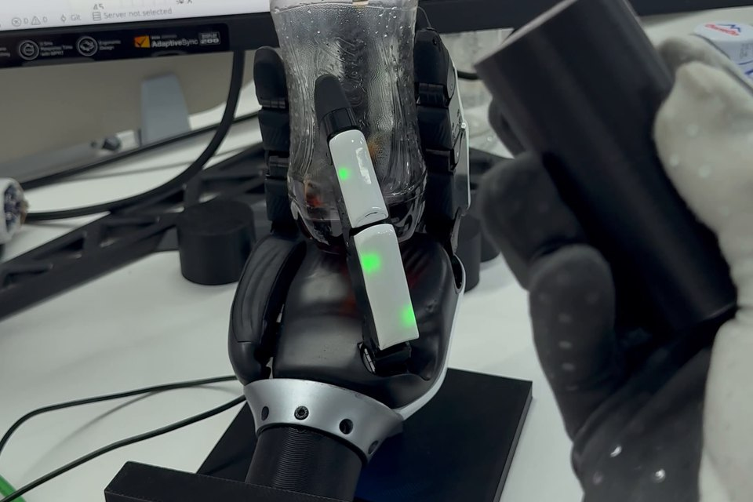
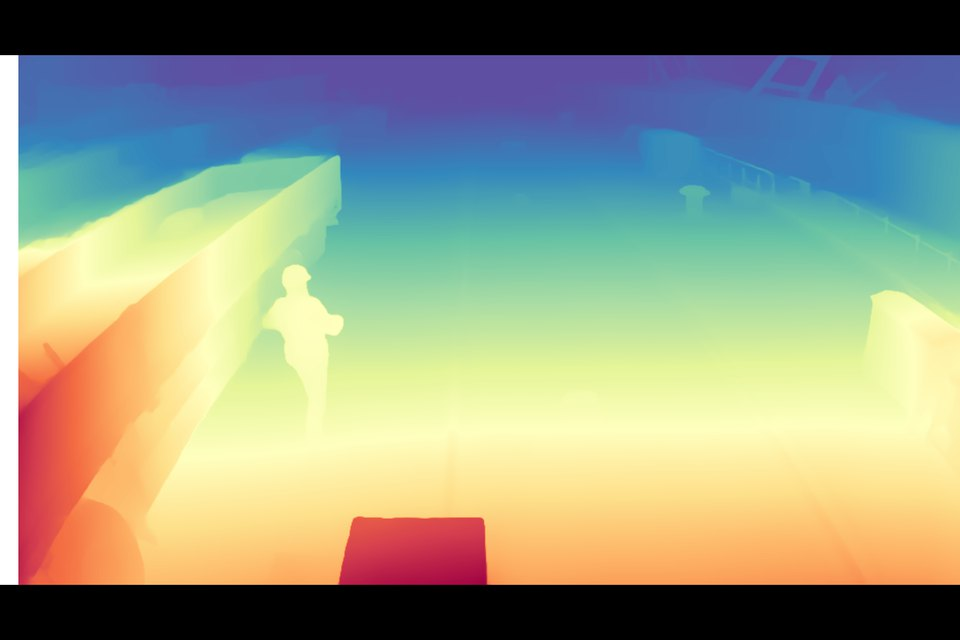

I am a master's student in Data Science and Artificial Intelligence at the University of Pennsylvania, and a student researcher in the Generative Multimodal Learning & Reasoning Lab advised by Prof. Jiatao Gu. My research is on robot learning: world models for robot control, reinforcement learning for dexterous manipulation that transfers from simulation to real hands, and diffusion and flow-based robot policies.
Before Penn, I received a B.S. in Mathematics with a minor in Computer Science from New York University, graduating summa cum laude with the George Bachman Award in Mathematics. I began my undergraduate studies in financial engineering at Guangdong University of Foreign Studies before transferring to NYU.
I am open to research collaborations and internships in robot learning. Feel free to reach out at hu5@engineering.upenn.edu.

Tactile Sim-to-Real RL for Dexterous In-Hand Rotation
ROBOTERA · Robot Learning Intern · May – Aug 2026 · Live demo at WAIC 2026
A vision-free policy that rotates objects in-hand for 15+ minutes without dropping, transferred zero-shot to a 21-DoF XHand1 Pro. Privileged PPO teachers trained at 20,480 parallel environments in Isaac Lab, distilled HORA/RMA-style into a proprioceptive and tactile student.
Video

DexGen-Teleop: Manus Glove-Guided Diffusion Policy
ROBOTERA · Robot Learning Intern · May – Aug 2026 · XHand1 Pro and M7 humanoid
The glove gives only high-level intent; a FiLM-conditioned UNet diffusion policy trained on 446K RL-expert transitions generates all finger motion. Demonstrated screwdriver and bottle rotation on hardware and integrated with the M7 humanoid through ROS 2.
Video

IMU Slope Estimation and Monocular-Depth Collision Monitoring
Broadsense · Algorithm Engineer Intern · Jun – Aug 2025
A ROS 2 road-slope estimator from a single 6-axis IMU with online gyro-bias estimation, and a port-crane collision monitor on one RGB camera built on Depth Anything V2.
Slope estimation code
Collision monitor code
Earlier experience
Sichuan Haizi Investment Management · Quantitative Analyst Intern
Jul – Sep 2024Leakage-safe time-series forecasting for U.S. equities; benchmarked LSTM and Temporal Fusion Transformer models with walk-forward validation, and turned forecasts into risk-aware position sizing.
ByteDance · Business Analysis Intern
Jun – Aug 2022Built CTR, engagement and conversion dashboards for the beauty category and ran A/B tests on content recommendation, lifting core campaign CTR by 20%.
A PPO policy spins a pen on a 21-DoF XHand1 Pro in Isaac Lab; the single-turn policy succeeds in 376 of 404 evaluation episodes (93.07%). The linked page replays one selected two-turn run, an experimental setting that is far less reliable.
Two 21-DoF XHand Pro hands on Marvin arms solve a fixed scramble in 554.66 s, all ten moves verified, 0.634° final alignment. Six synchronized cube views with 0.25×–4× playback.
Turn course slides and PDFs into dense, exam-ready LaTeX cheatsheets. A Claude Code skill with a browser-based editor.
NotgoogleCIS 5550 · team lead
Distributed search engine from scratch in Java: replicated KV store, MapReduce, PageRank. 1M+ pages crawled on 5 EC2 nodes.
An atlas of where vision-language models place objects that don't exist, across POPE and AMBER with Qwen2.5-VL and LLaVA.
News Source ClassificationCIS 5190 · team lead
Scaled the dataset to 91K labeled URLs and fine-tuned DistilBERT to 92.9% accuracy; released on Hugging Face.
A heterogeneous GNN retrieves metapaths for drug–disease link prediction; an LLM explains the prediction.
Claude Code usage limits as a pixel-art widget in the GNOME top bar.